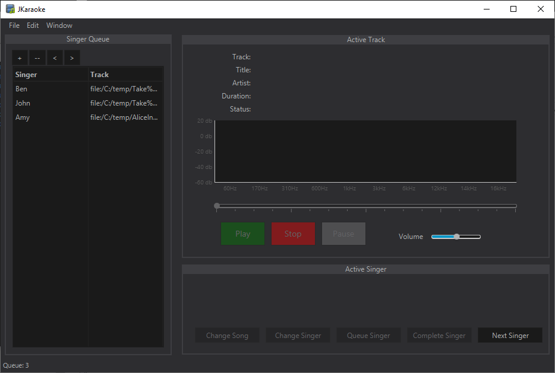
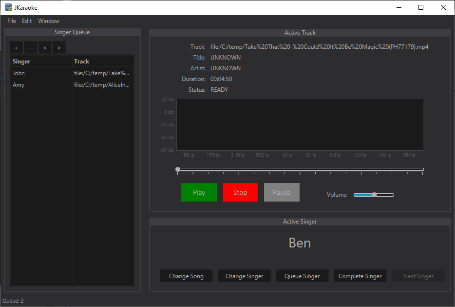

Managing the Singer Queue
The queue management system in jKaraoke allows you to easily organize and control the flow of your karaoke event. This page covers the essential operations for adding singers, reordering the queue, editing entries, and removing participants.
Adding a Singer
To add a new singer to the queue:
- Click the Add Singer button in the queue management panel.
- Enter the singer's Name in the designated text field.
- Click Browse to select the Song File (MP3, CDG, etc.) from your computer.
- Click OK to add the singer to the queue.
The new singer will appear at the bottom of the queue, ready to perform when their turn comes up.
Reordering the Queue
Sometimes you need to adjust the order of singers in the queue. jKaraoke provides simple controls for this:
- Move Up: Select a singer from the queue and click the Move Up button (or use the up arrow) to move them higher in the list.
- Move Down: Select a singer and click the Move Down button (or use the down arrow) to move them lower in the list.
- Drag and Drop: Some versions may support clicking and dragging a singer to a new position in the queue.
This flexibility allows you to accommodate special requests or adjust for timing considerations during your event.
Editing Entries
If a singer wants to change their song choice or you need to correct their information:
- Select the singer's entry in the queue table.
- Click the Edit button (or double-click the entry).
- Modify the singer's Name, Song Title, or Artist as needed.
- Click Save or Update to confirm the changes.
Alternatively, you may be able to click directly on individual fields in the queue table to edit them inline, depending on your jKaraoke version.
Removing Singers
If a singer needs to leave early or decides not to perform:
- Select the singer's entry from the queue.
- Click the Remove or Delete button.
- Confirm the removal if prompted.
The singer will be immediately removed from the queue, and the remaining singers will move up accordingly.
Next Singer Workflow
When it's time to advance to the next performer, use the "Next Singer" button to automatically load the next person in the queue:
Status Indicators
Singers in the queue may have different status indicators to help you track their progress:
- New: A singer who has just been added to the queue and is waiting for their turn.
- Ready: A singer who is next in line or prepared to perform. This status helps you identify who should be getting ready.
- Singing: The singer who is currently performing. This is typically the active entry at the top of the queue or in a dedicated "Now Playing" section.
These status indicators provide a quick visual reference to help you manage the flow of your karaoke event smoothly and ensure everyone knows their position in the queue.